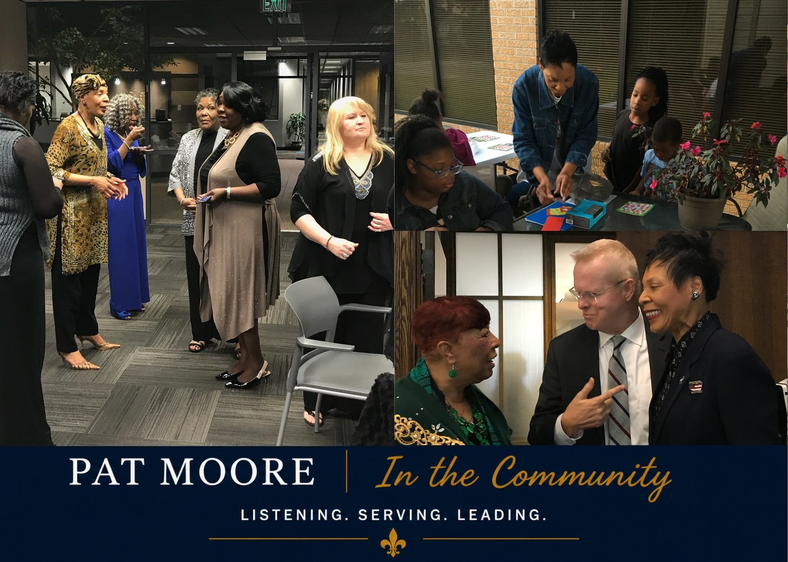
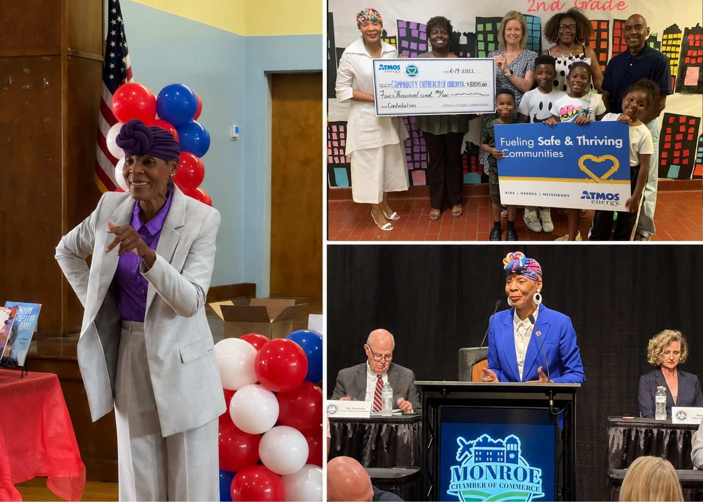
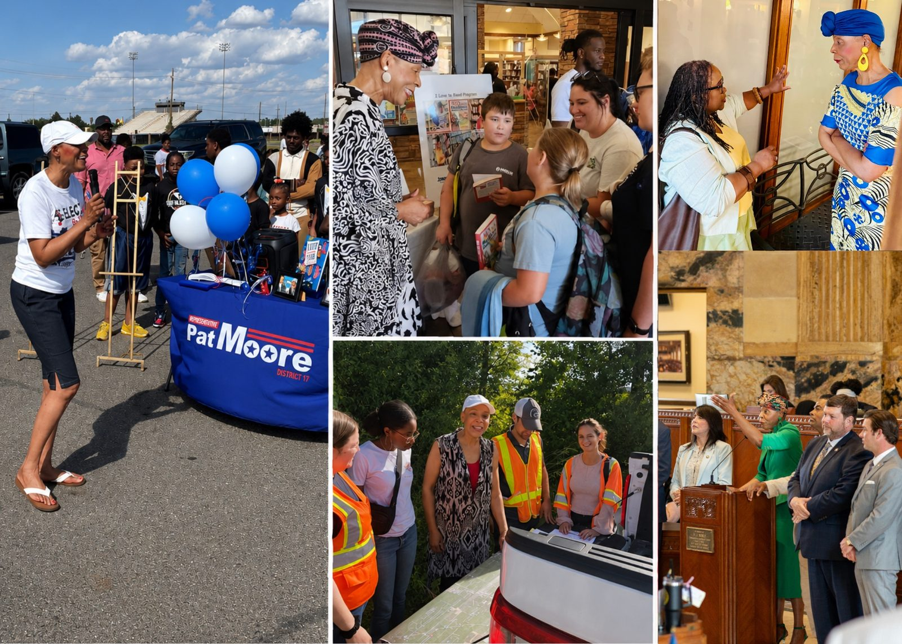
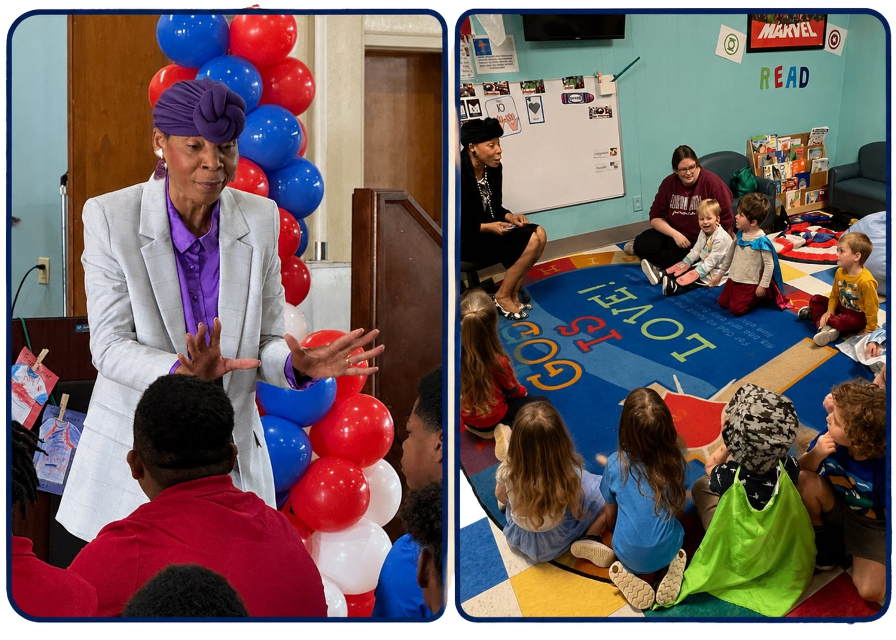

This Is Home. I'm Stepping Up.
I'm running for Congress because people across Louisiana's 5th District deserve someone who will listen to them, stand up for them, and remember who they represent when they get to Washington.
I grew up here. I raised my family here. I've served our communities here. And I know what families are up against.
When your community needs somebody to step up, you step up.Your Support Carries This Campaign Home
Louisiana's 5th District is big. Reaching people in every parish takes signs, mail, travel, events, digital outreach, volunteers and a strong grassroots campaign.
But this is about more than campaign materials.
It's about making sure people who have felt overlooked know somebody sees them, hears them and is ready to represent them. Your contribution helps us show up, listen and carry this campaign into communities across the district.
Whether you give $10, $25, $100 or whatever makes sense for your family, thank you for believing this work is worth doing.
Donations are processed securely through ActBlue. Contributions are subject to federal contribution limits and disclosure requirements.
When Something Needs to Be Done, You Show Up.
Pat Moore didn't get into public service because she was looking for another title. She got involved because she saw people and neighborhoods that needed somebody to show up.
Her story began right here in Louisiana. She knows what it means for a family to struggle. She knows what it means to need an opportunity — and what can happen when family, teachers, employers, mentors, and a community invest in someone and refuse to count them out.
Those experiences shaped the way Pat serves today.
As State Representative for House District 17, Pat has listened to families, worked with people across party lines, and fought to bring attention and resources to communities that are too often overlooked.
Now she is ready to take that work to Congress.
"This is home. I grew up here. I raised my family here. The people here helped shape my values. I know what my neighbors are up against, and I know who I represent."
For Pat, public service has never been about the title. It is about the people.
- State Representative, Louisiana House District 17 since 2019
- Member, Louisiana Legislative Black Caucus & Women's Caucus
- Serves on committees for public works, disaster recovery & justice
Pat Moore in the Community

This Movement Belongs to All of Us
A campaign isn't built by one person.
It's built by neighbors talking to neighbors. People opening their homes. Volunteers making calls, knocking on doors, sharing a post, putting out a sign, or simply telling somebody why this election matters.
There is a place for you in this campaign.
However you choose to help, I would be honored to have you with us.
- Knock doors and talk with neighbors across the district
- Make calls and send texts to voters
- Host a meet-and-greet or sign event in your community
- Help spread the word on social media
We The People — Join the Movement
Tell us how you'd like to get involved using our official sign-up form. A member of Team Moore will follow up with next steps.
Open the Sign-Up FormOpens in a new tab. Your information goes straight to Team Moore.
Showing Up, Every Day
From classrooms to town halls to the House floor, Pat shows up for the people of Louisiana's 5th District.



What I'm Hearing Across Our District
Every parish is different, but I keep hearing many of the same concerns.
Families are working hard and still struggling to get ahead. Seniors are worried about healthcare and the cost of medicine. Parents want good schools and safe communities. Small businesses need room to grow. And too many young people believe they have to leave Louisiana to find opportunity.
I'm listening. And these are the things I'm prepared to work on in Congress.
Helping Working Families Get Ahead
Working people shouldn't do everything right and still feel like they're falling behind. I will work to lower everyday costs, support fair wages, make childcare more affordable, and help create good jobs that allow families to build a life right here at home.
If you work hard, you ought to have a fair chance to get ahead — not just get by.
Keeping Our Communities Strong
A ZIP code should not determine whether your road gets fixed, your neighborhood is safe, or your community gets noticed. From Monroe and Alexandria to our Delta communities, rural parishes and small towns, every part of this district deserves to be seen and served.
No person and no community should be overlooked.
Creating Opportunity Here at Home
Too many of our children grow up believing success means leaving Louisiana. It shouldn't. We need to support small businesses, skilled trades, workforce training, agriculture and new industries that create good-paying jobs close to home.
People should not have to leave the community they love just to find opportunity.
Giving Every Child a Real Opportunity
I know what education and opportunity can mean in the life of a child because I have lived it. Our children deserve good schools. Teachers deserve our support. Parents deserve to know their children are being prepared for what comes next.
Where a child starts in life should never determine where that child is allowed to finish.
Protecting Access to Healthcare
Nobody should have to choose between getting the care they need and paying the bills. That means protecting rural hospitals, making healthcare more affordable, lowering the cost of medicine, supporting mental and behavioral healthcare, and making sure seniors can get the care they earned.
When families are asking for help, government should not make it harder to find it.
A Government That Remembers Who It Works For
Washington can feel a long way from Louisiana. Your representative shouldn't. I believe you should be able to reach the person you elected. You deserve someone who listens, tells you the truth, works with people who are willing to solve the problem, and isn't afraid to speak up when something isn't right.
I will not forget why I am there or who I represent.
I'm Running Because Our Communities Deserve to Be Heard
I'm running for Congress for the same reason I first ran for the Louisiana House: to represent the people.
Black, white, brown. Young and old. Democrat, Republican or no party at all.
I meet people every day who are working hard, trying to provide for their families, and wondering whether anybody in Washington understands what they are going through.
I hear them.
I've spent my time in Baton Rouge working with people from both parties when it helped our communities, and I've been willing to speak up when doing the right thing required it. That is the kind of representative I intend to be in Congress.
I know who I represent. I know where I come from. And I'm ready to get to work.